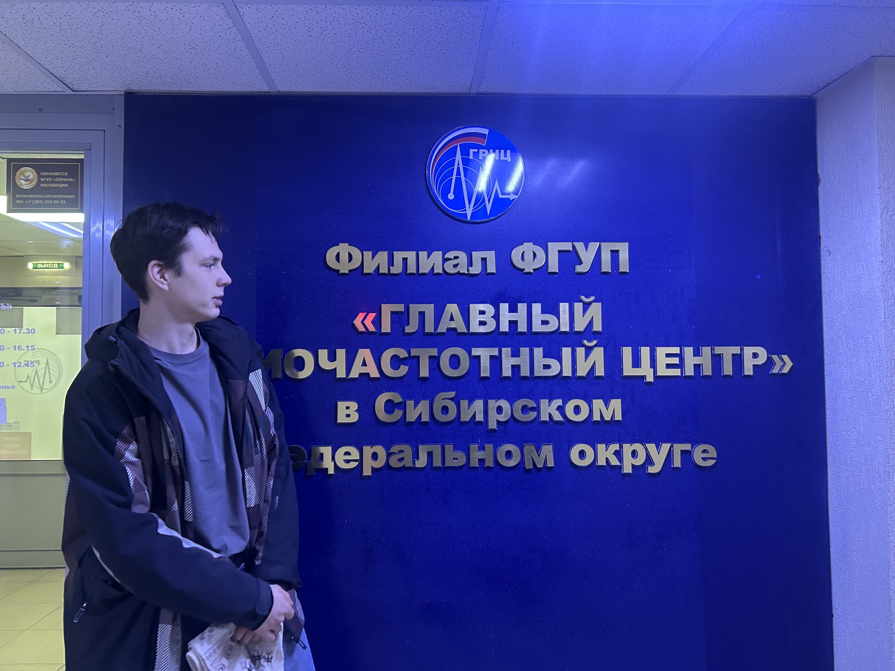

РАДИОЛЮБИТЕЛЬСКАЯ СВЯЗЬ, непрофессиональная радиосвязь, осуществляемая в целях экспериментирования с приёмопередающей аппаратурой и антеннами, проведения соревнований по радиоспорту, установления связи с др. радиолюбителями и т.п. В соответствии с регламентом радиосвязи для Р. с. выделено неск. КВ и УКВ диапазонов в интервале частот от 3 МГц до 22 ГГц. Режимы связи — телегр. и телефонный.
Если честно, до недавнего времени я довольно мало знал про радиолюбителей. Помню, на первом курсе видел в "Дарах читателям" какой-то радиолюбительский журнал. Коллективная фотка оттуда хорошо запомнилась: стоят мужики в одинаковых белых футболках со случайными наборами букв. Во интересно ...
Недавно тут задумался о том, чтобы meshtastic развернуть, а там-то, оказывается, без позывного радиолюбителя можно завести ноду на жалких 25 мВт. С позывным ситуация получше и можно уже на 0.1 Вт. Для сравнения оператору радиолюбителю с минимальной категорией разрешается иметь станцию до 5 Вт. Такие отличия из-за того, что 868 МГц, на котором работает meshtastic, — это не радиолюбительский диапазон и правила там другие. Нахрена тогда позывной? Как я понял, он нужен чтобы вообще зарегистрировать устройство, хотя в экзамене на позывной ни-че-го нет про подобные сети, а правила в них действительно другие. К примеру, радиолюбителям запрещено передавать любые зашифрованные сообщения, а тут всё шифрованное. Радиолюбителям надо передавать свой позывной не реже, чем раз в 10 минут эфира, а ноды таким не занимаются. Короче, это реально другое.
Так-то я и озадачился получением радиопозывного. Для понимания, что откуда брать и куда слать, была крайне полезна статья с Хабра и не сильно полезны статьи с сайта СРР. Билеты к экзамену простые. Большинство на здравом смысле и базовой физике отвечаются, остальные несколько штук несложно запомнить. Хотя сдал я пока на третью категорию, на первую вопросы тоже читал, и они не очень сложные, если знать основные радиоэлектроные вещи и что такое есть Фурье. Сложнее там принять азбукой Морзе "несмысловой текст"...

Сегодня спустя неделю после сдачи экзамена и подачи заявления на образование позывного наконец мне его выдали. Под такие новости прикупил домен UB9OGU.RU. Броско, согласны, да? Пока хз, че с ним делать, но есть идеи.